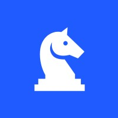
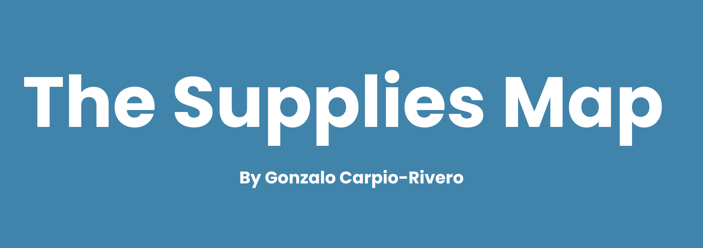

Gonzalo
Carpio-Rivero
Industrial Engineering · Finance · Political Science
Purdue University · Rising Junior West Lafayette, IN
Italian-Peruvian engineer with a compulsion for building things from scratch. I study Industrial Engineering and Finance at Purdue, spend my summers trading precious metals in Lima, and ship full-stack products in between. I'm drawn to the intersection of physical commodities, geopolitics, and data — and I think the most interesting problems live where markets meet the real world. Outside of work I cook Peruvian food, read about Latin American history, and make my first options trade at 15 feel like a reasonable origin story.
Work Experience
- Mediated 4 commercial disputes with international commodity buyers (Trafigura, Aurubis, Asahi, Ocean Partners), resolving valuation disagreements within 2–3 days on contracts worth $10M+ in metal content
- Tracked financial exposure across 9+ active export shipments across 3 operating units — monitored gaps between preliminary invoices and final LBMA market-price settlements
- Produced 4 editions of a weekly market intelligence report for VP-level leadership, synthesizing global macro events, commodity price trends, and forward-looking gold & silver price analysis
- Engineered a Power BI dashboard across INM, MSCC, and MSCD units covering inventory, receivables, and costs — saved weeks of manual data gathering and gave leadership real-time commercial visibility
- Handled KYC/compliance work for counterparties including Philoro, ALS, and AHK; managed SAP purchase order logistics across the full shipment lifecycle
- Directed curriculum transition to integrate AI research, structuring coursework for 2026–27 incoming freshmen
- Analyzed student performance using Power BI and prompt engineering across 25 data visualizations — kept absences at 5%
- Developed 12+ AI case studies with Purdue AI researchers; coordinated 3 researcher guest presentations
- Supervised logistics, billing, and audits for 700 summer conference attendees — 4.4/5 customer satisfaction
- Optimized billing reporting with AI tools including Zapier, accelerating accounts payable delivery to clients by 22%
- Monitored geographic validity of 500+ meal and housing cards using a live compliance tracker that flagged discrepancies in real time
- Manage a floor of undergraduate students — mentorship, conflict resolution, and community programming
- On-call crisis response and residence hall policy enforcement

- Process mapping and root-cause analysis for 3 client supply chains — 18% reduction in operational costs across distribution workflows
- Designed a ChatBot using GitHub Copilot and PyTorch, reducing complaint ticket volume by 30%
- Automated inventory management with openpyxl and SQL — buffer stock integration reduced delivery wait times by 80%
Projects & Leadership

Country risk and supply chain intelligence platform scoring 192 countries across 20+ weighted metrics. Built using agentic AI coding workflows across Python, D3.js, Three.js, and AWS. Adopted as a reference tool in graduate-level supply chain coursework at Universidad del Pacífico. 150+ monthly active users across procurement and risk analysis contexts.
Lead alumni engagement strategy for the Society of Hispanic Professional Engineers chapter at Purdue. Building mentorship pipelines between current students and industry professionals in engineering and tech.
About Me
Builder by instinct, trader by aspiration. I'm drawn to problems that sit at the intersection of markets, data, and geopolitics — the kind where the answer isn't on Google and the stakes are real. I work fast, think structurally, and I'm not shy about having opinions.
I made my first options trade at 15 on Mercado Libre and have been thinking about markets ever since. I identify as entrepreneurial — not in the buzzword sense, but in the sense that I default to building something when I see a gap.
Dual Italian-Peruvian. Born in Italy, grew up in Lima. That background shapes how I see trade, geopolitics, and the places most people overlook on a map.
Skills
Coding
Software
Languages
Domain
Coursework
Let's talk.
Open to commodity trading internships and interesting conversations about markets, geopolitics, or products.